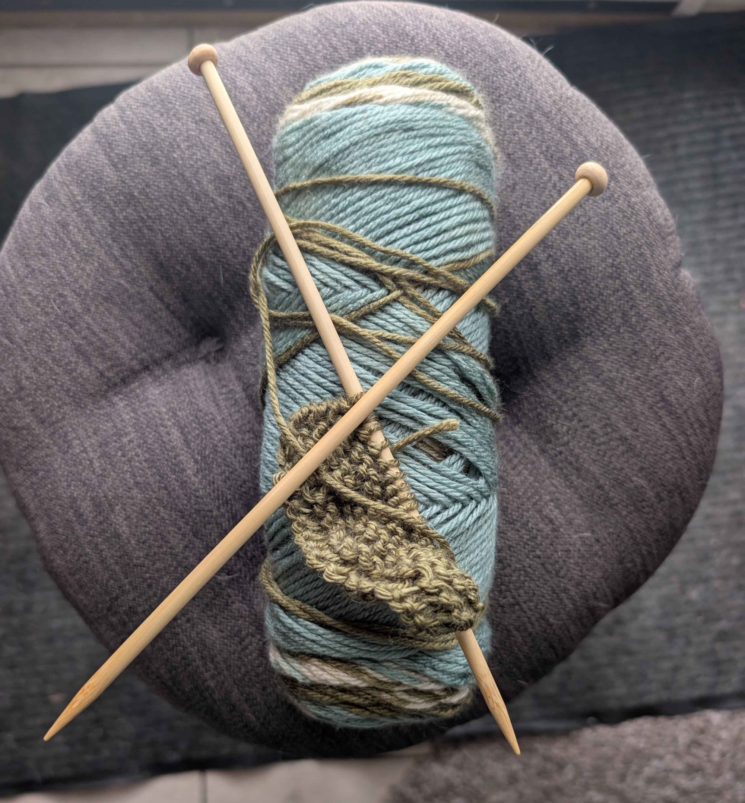

Introduction to Yarn Crafts and Associated Hobbies
The Two-Needle Tradition
A Beginner’s Guide to Knitting
What is Knitting?
Knitting is a method of creating fabric by using two or more needles to pull loops of yarn through other loops. Knitting keeps a whole row of "live" stitches on the needle at once, if a stitch falls off, it can "run" or "ladder" down the fabric, which is why knitters are so protective of their needles!

A pair of knitting needles with loops cast on sitting on some yarn.
Is Knitting Harder than Crochet?
The debate over whether knitting is "harder" than crochet usually boils down to how your brain (and hands) prefer to work.
Crochet is often considered more beginner-friendly because you only deal with one "live" stitch at a time; if you drop your hook, the whole project won't unravel instantly.
Knitting, by contrast, requires managing dozens of open loops across two needles, which demands a bit more dexterity and a steeper initial learning curve.
However, many find that once the muscle memory for knitting kicks in, the rhythmic pace is more meditative, whereas crochet can involve more complex hook placements.
The Starter Kit
You don't need a craft store's entire inventory to begin. Here are the "must-haves" for a beginner:
Knitting Needles - A size US 8 (5mm) is a very beginner friendly size to work with most budget yarns, material is important for needles and wood often provides a more textured surface for beginners
Yarn - Any yarn can work but a worsted medium weight (Weight 4 on the package) will work ideally with the above needles
Scissors - Helpful to cut loose strands and end projects
Tapestry Needle - These are large, blunt needles that are used for weaving in the ends of your project to remove loose threads
Stitch Rings - These are small plastic rings that you can slide on the needles between a stitch to mark locations or counts
The Essential Knit Techniques
This list of essential knitting terms and techniques will help you understand and begin your knitting journey.
Technique Name
Abbreviation
Description
Cast On
CO
The process of creating the very first loops on your needle.
Bind Off
BO
The method of finishing your edge so the stitches don't unravel.
Slip Stitch
sl
Moving a stitch from one needle to the other without knitting it.
Knit Stitch
k
The "V" shaped stitch that is the backbone of knitting.
Purl Stitch
p
The inverse of a knit; it creates a small horizontal bump.